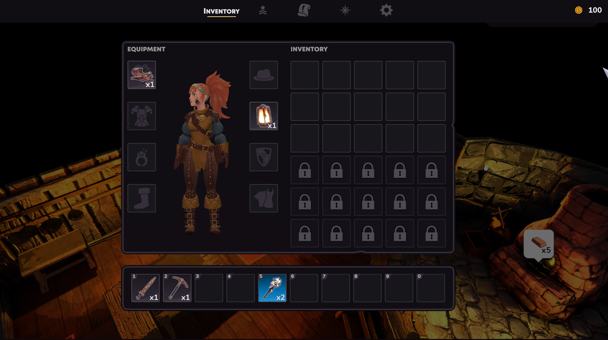

Tempered Hue
2024-2025
Tempered Hue is a Farming Sim/Adventure game about mining and blacksmithing, with heavy emphasis on verticality and exploration, by Zugalu Entertainment.
I was Lead Game Designer and UX/UI Designer on this project, and was responsible for the core game mechanics, all interfaces, icons, documentation and leading the design team.
- • Worked with Unity Engine to create levels, minigames, systems, mechanics and add UI elements,
- • Systems design, documentation and management (Hack'n'Plan/Trello).
Lead Level Designer / UX UI Designer
- • Conceptualized, drafted and executed UX/UI flows, pacing and interactions to provide a rich and intuitive user experience.
- • Created, iterated and implemented all design for UX/UI elements including menus, modals and icons.
- • Designed and developed game systems, features and mechanics.
- • Authored and edited all documentation critical to Game Design including Pitch Documents, Mechanics, Systems, GDD and LDDs.
- • Designed combat mechanics and systems for both cooperative online-multiplayer and single-player experiences.
- • Worked collaboratively with internal art, design and programming teams to implement new features and systems.
- • Used Unity to integrate designs into prefabs and assets for use by all teams.
- • C# programming for prototypes of mechanics and systems.
- • Agile task delegation, bi-weekly sprint reviews, and backlogs.
Design for Tempered Hue
With our take on the Slice-of-life/Farming Sim genre, Tempered Hue was going to focus more on action and adventure, sending players to explore a dangerous and dark set of caverns as they gradually navigate up a massive escarpment to eventually free their village from the shackles of illness.
The Project Lead wanted to remain firmly rooted in the genre - citing Coral Island as a core influence - but to differentiate from other games to provide something fresh. I designed something different - a GrimDark adventure-centric game with free movement and exploration.
UX/UI
I didn't want it bright and cheery UI, contrasting harshly from the underground caverns the players would spend so much time exploring - but still wanted to keep a minimal look and feel to avoid overt distractions. I used a sparse palette, and focused on high readability.
There would be few deviations from the norm in terms of UI structure, however - all of the usual expected feedback elements would be required, as would the familiar menu structures so common across the genre.
The player's inventory screen and core menu.
The game HUD while a player explores town.
The Quest menu.
Controls, Camera and Combat
From the start, the intent was to have exploration and combat be handled in a manner similar to a Zelda game - and that's where we'd stand out in the genre. Players could explore freely in the caverns, and would need to climb to reach nodes of rare ores or even use a grappling hook to rappel and reach areas otherwise inaccessible - and engage enemies in heated melee complete with dodges and blocks expected of an action game.
The initial prototype was quite promising, and most importantly - it was fun.

A player climbing and using the grappler, while stamina is used.
Minigames
We had some narrow constraints on Tempered Hue - timeline and budget were key, and we had to include at least 5 minigames in the finished project to meet our pitch promises to obtain funding.
We settled on creating an engaging minigame for the Anvil and Forge, and a basic one for the Quenching Barrel. This would turn smithing into an "art" that a player would master over time, and I could create a mechanic to provide gradual improvements to each station via unlocks provided from the exploration loop.

Players hammer out their ore in real-time, keeping a rythm and hitting a button when a shrinking circle crosses a target. Failures reduce quality.
Documentation
Movement Mechanics draftMining Mechanics draft
Blacksmithing Mechanics draft.
Shop Mechanics draft.
Early UI flows, ideas and concepts
CMF Pitch/Originality doc submission
Work Samples